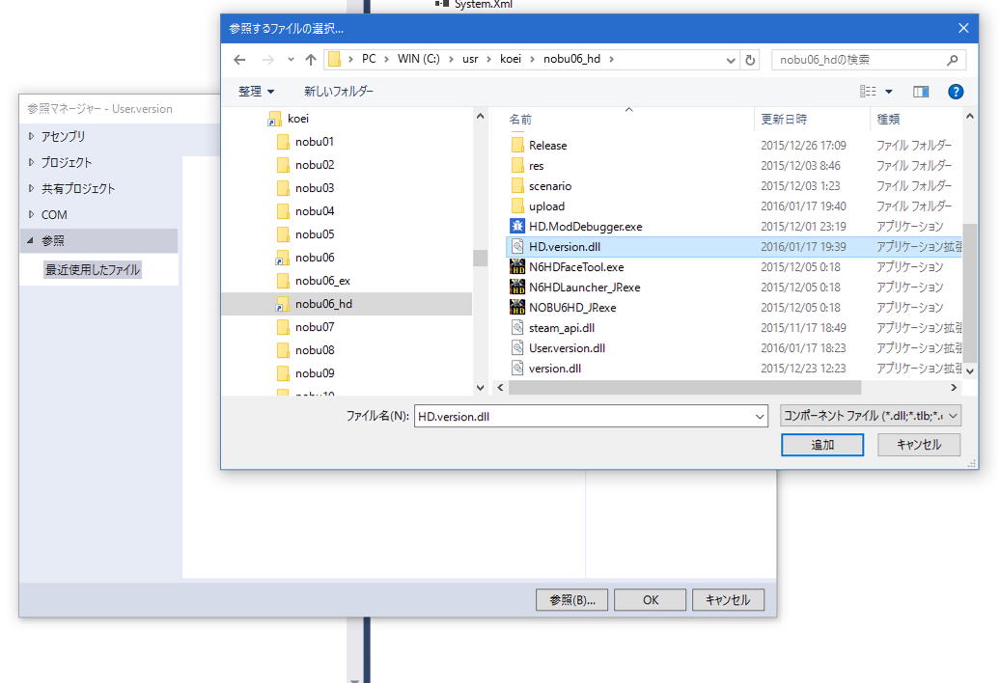

User.version.SDKそのものは、ほとんどソースを内包していません。
普段C#を利用される方は、提供されている.NET FrameWorkライブラリそのものの具体的な実装内容を
ソースまで巡って実際確認する、といった習慣はないことでしょう。
どちらかと言えば、「アセンブリとなるdll」を参照可能として加え、
「入力補完」や「オブジェクトブラウザー」や「各種API資料」を元に使っていくというスタイルだと思います。
User.verson.SDKもそのスタイルに習っています。
HD.version.dllをアセンブリとして加えることで、HD.version.SDKの98％ほどの機能が、
そのまま利用可能です。
User.version.SDKは、そのままではコンパイルできません。
参照として、HD.version.dllを追加してください。

User.version.SDKをコンパイルすると、
x86\ReleaseフォルダにUser.version.dllが出来上がりますので、
このファイルを天翔記フォルダへとコピーしましょう。